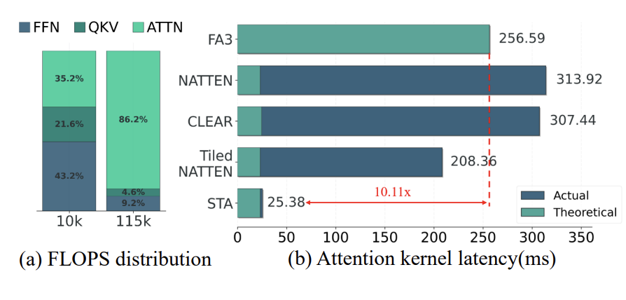
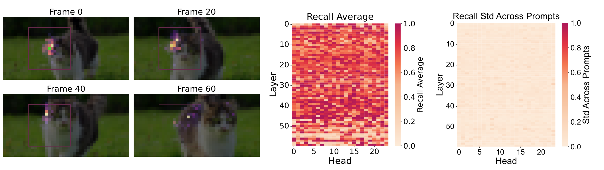
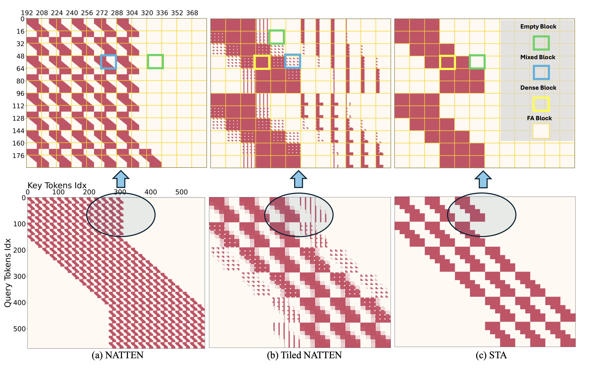
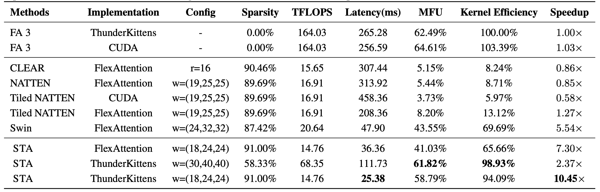
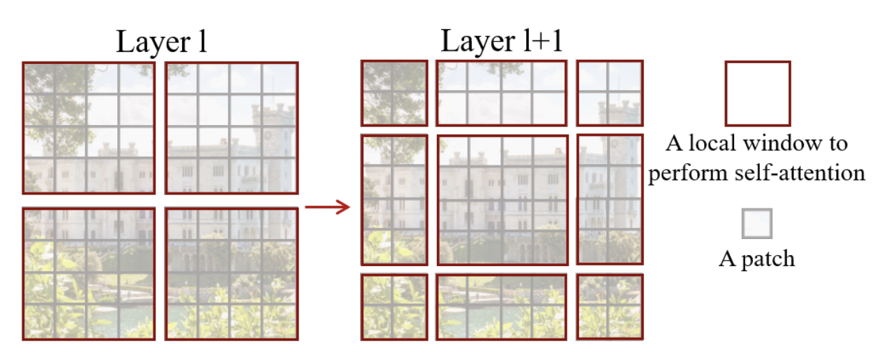

TL;DR: Video generation with DiTs is painfully slow – HunyuanVideo takes 16 minutes to generate just a 5-second video on an H100 with FlashAttention3. Our sliding tile attention (STA) slashes this to 5 minutes with zero quality loss, no extra training required. Specifically, STA accelerates attention alone by 2.8–17x over FlashAttention-2 and 1.6–10x over FlashAttention-3. With STA and other optimizations, our solution boosts end-to-end generation speed by 2.98× compared to the FA3 full attention baseline, without quality loss or the need for training. Enabling finetuning unlocks even greater speedups!
Can you spot the difference between videos from the original HunyuanVideo and our accelerated inference? 👉Try out kernel in our FastVideo project project and we’d love to hear what you think!
Attention in Video DiTs


Our analysis points to a seemingly obvious solution: replace full 3D attention with localized attention to speed up video generation. A natural approach is Sliding Window Attention (SWA), widely used in 1D sequences for NLP. However, we find that SWA completely breaks in 2D and 3D! Despite its promise, there is no efficient implementation for 3D video DiTs.
Worse yet, as shown in Figure 1 (right), existing SWA methods like CLEAR and NATTEN reduce FLOPs but fail to deliver real speedups – strangled by poor hardware utilization. Why? Because higher-order sliding window attention is fundamentally incompatible with modern FlashAttention (FA) and brutally inefficient on GPUs. In the next section, we expose exactly why traditional SWA falls apart – and how we break past its limits.
Inefficiency of Sliding Window Attention

Implementing 2D/3D SWA with FlashAttention comes down to one major challenge: defining its attention mask. Depending on how the mask is applied, we categorize attention blocks into three types:
- Dense blocks: with all attention scores retained (highly efficient ✅),
- Empty blocks: – mask out all values (can be skipped entirely ✅),
- Mixed blocks – retain some scores while masking others (a nightmare for efficiency ❌).
While dense and empty blocks work well with FA, mixed blocks introduce significant computational overhead due to the following issues:
- Wasted computation: Since a block is the minimum compute unit, FA must compute the entire block before applying the mask, leading to unnecessary work.
- GPU-unfriendly masking: The intra-block mask depends on both the user-defined attention pattern and the block’s location within the attention map. Worse, it cannot be precomputed—doing so would cause quadratic memory overhead. Even in FlexAttention, a simple causal mask adds 15% overhead—in 3D SWA, masking overhead can exceed the cost of computing the block itself! That is why higher-order SWA is inherently GPU-unfriendly – it produce too many mixed blocks!
To illustrate, we analyze NATTEN in Figure 3(a), a refined SWA variant that shifts window centers at image/video boundaries to ensure each query attends to a fixed number of keys. However, this leads to queries attending to distinct key groups, disrupting uniformity in the attention map and creating a flood of mixed blocks. To mitigate this, Tiled NATTEN reorders inputs to increase the number of dense blocks (Figure 3(b)). Yet, a significant portion of blocks remain mixed, making SWA fundamentally inefficient for GPUs.
Understanding why SWA produces the zigzag attention map in Figure 3 may not be immediately intuitive. To illustrate this effect, we provide an animation below that visualizes 2D SWA on an image of size (10,10) with a window size of (5,5).
Sliding Tile Attention
The idea behind Sliding Tile Attention (STA) is simple: GPUs work best with block-by-block computations, but SWA slides its window token-by-token, which is inefficient. Our proposed STA fixes this by sliding tile-by-tile. In 3D scenarios, we define a tile as a contiguous group of tokens forming a spatial-temporal cube, with its size determined by the block size in FlashAttention. This small change eliminates mixed blocks in the attention map and significantly improves computational efficiency.
- SWA: Moves token-by-token, creating irregular attention maps that GPUs struggle with.
- STA: Moves tile-by-tile, forming dense and empty attention blocks that are GPU-friendly.
Specifically,
- A video of size $(L, L, L)$ is divided into non-overlapping tiles of size $(T, T, T)$. Assuming Flash Attention’s block size is $(B, B)$, T should satisfy the condition $B = T^3$.
- Tokens within each tile are flattend consecutively. The window size should also be integer multiple of the tile size.
- The attention window moves tile-by-tile with a step size of $(T, T, T)$. For each local window, the central query tiles attend to keys within the window.
- This results in only dense and empty blocks in the attention map, completely eliminating inefficient mixed blocks, as shown in Figure 3 (c).
The video below demonstrates how STA works. For better illustration, we use a 2D scenario. In this example, we apply STA to a 10×10 image with (2,2) tiles and a (6,6) window.
STA can be efficiently implemented with FlexAttention, which provides enough functionality to skip all empty blocks and avoid adding unnecessary intra-block mask on the dense blocks. We can further optimize the sparse attention masks by disaggregating the inter-block mask logic from the compute kernels. Thus, we implement our attention kernels based on ThunderKittens and FlashAttention3 .
Kernel-level Optimizations for STA
Inpired by FlashAttention 3 and ThunderKittens, our implementation split the threadblock into compute warpgroups and data warpgroups, and the inter-block mask is completely managed by the data warpgroups. Each compute warpgroup is responsible for calculating one query block, which always resides in the SRAM (Split-Q). The data warpgroup is responsible for asynchronously loading the KV blocks from HBM to SRAM. For each block of query, the data warpgroup needs to decide which key and value blocks the query block will attend to in STA and only load those blocks. Since the data warpgroups are asynchronous, the overhead of calculating the inter-block mask in STA and deciding which data to load can be hidden with overlapping. On the other hand, the compute worker is completely oblivious of the sparse attention pattern. It performs attention computation with the key value blocks in shared memory loaded by data workers, and once all data is consumed in the circular cache, the computation is finished.

Kernel Performance
We report our kernel performance in Table 1. The results show that existing local attention methods struggle with efficiency. For example, while CLEAR reduces FLOPs to 15.65, it actually slows down inference by 14%. NATTEN also falls short—despite achieving 91% sparsity, its basic version is 15% slower than full attention, and even the optimized tiled variant in FlexAttention only speeds things up by 1.27×. Among current options, Swin is the only kernel with a memory utilization factor (MFU) above 40% and kernel efficiency above 60%, but it sacrifices flexibility in the attention mechanism – Swin is not a local attention variant, and we will show in the next section that applying swin the video generation models significantly degrades performance.
In contrast, when tested in FlexAttention, STA improves MFU from 8.20% to 41.03% compared to Tiled NATTEN. With further kernel optimizations, STA achieves a 10.45× speedup over full attention. Even at 58.33% sparsity, it still delivers 2.37× faster processing. This means STA can handle larger attention windows while still outperforming NATTEN. To our knowledge, STA is the first method to combine efficient 3D sparse local attention with real-world speed improvements.
Window Size Calibration Enables Training-free Speedup
As shown ealier in Figure 2 (right), video diffusion models exhibit strong 3D locality and head specialization. While different attention heads capture information at different scales, their locality patterns remain consistent across prompts. This allows us to search for an optimal window size per head using a small set of prompts and generalize the results to others. Specifically, for each $(s, l, h)$ tuple—where $s$ is the inference step index, $l$ is the layer index, and $h$ is the head index—we determine the best attention mask.
Since early sampling steps are crucial for global structure, we retain full attention for the first 15 steps. For the remaining steps, we pick candidate masks from a predefined set by computing the L2 distance between their outputs and full attention outputs, selecting the mask with the lowest distance. Our video generation setup uses a $117×768×1280$ resolution, translating to a DiT shape of $30×48×80$. We set the tile size to $6×8×8$ and select from window sizes [$(30, 24, 24)$, $(18, 24, 40)$, $(6, 48, 80)$, $(30, 48, 8)$, $(30, 8, 80)$]. We calibrate on 18 prompts, averaging the L2 distance across them to determine the best mask strategy per head. The entire search process completes in under 18 hours on a single H100 GPU. STA with window size calibration achieves an attention sparsity of 58% and a 1.8x end-to-end speedup, reducing DiT inference time from 945 seconds (FA3 full attn) to 520 seconds with no quality degradation.
STA accelerates attention by exploiting redundancy in 3D full attention. Another approach to speeding up video generation focuses on caching, leveraging redundancy across diffusion steps. We demonstrate that STA is compatible to TeaCache, a state-of-the-art diffusion acceleration technique based on caching. Together, our solution brings 3x speedup, reducing DiT inference time from 945 seconds to 317 seconds with no quality loss.
We evaluate our method on 200 randomly selected prompts from the MovieGen Bench. Below, we provide additional uncherry-picked qualitative comparisons between the original Hunyuan model and our 3× speedup solution.
More results can be found here.Training with STA Unlocks Greater Speedup
Beyond searching for the optimal sparse mask per attention head, we can use a fixed window and fine-tune STA to maximize performance while maintaining high sparsity. Since STA follows the 3D locality property, this adaptation can be learned efficiently with minimal training overhead. In our experiments, fine-tuning took just 8 hours on 8 H100 GPUs—negligible compared to the cost of pretraining video diffusion models. Although each attention layer operates on a restricted local window, the receptive field expands through stacked transformer layers, allowing the Diffusion Transformer to generate globally coherent videos.
For example, with a very sparse window configuration of wt=(18,24,24), it achieves 91.00% attention sparsity, yielding a 5.76× FLOPs reduction and a 3.53× actual latency reduction. Importantly, this efficiency gain comes with minimal quality tradeoff: STA maintains an 80.58% VBench score in the training-free setting and improves to 82.62% with fine-tuning.
Final Thoughts
It might seem surprising that efficient 2D/3D sliding window attention did not exist before STA – after all, it’s a fundamental concept and widely used in 1D contexts. So why has no one cracked the kernels for 2D/3D until now?
Retrospectively, let’s take a look at the Swin Transformer. The authors faced the same challenge: efficient 2D sliding window attention kernels were nontrivial to implement. Their solution? Avoid it altogether. Instead of true sliding windows, Swin uses non-overlapping, static window partitions, sidestepping the efficiency issue but at the cost of breaking cross-window attention, which is crucial for video tasks. Of course, Swin gets away with this because it’s used in a pretraining setup – the model compensates for the limitation by learning to stitch information across layers with shifting windows. That’s fine when you have the luxury of pretraining, but in training-free or fine-tuning scenarios like ours, it just doesn’t work as well.
So, if nothing else, we take comfort in knowing that solving this problem was never supposed to be easy—but that just makes the progress even more exciting!

Conclusion
We believe STA’s potential extends far beyond accelerating video diffusion models. It can be applied in pretraining and generalized to other high-order data. Locality is a universal property across almost all data modalities. We hope STA inspires new, more efficient models across various domains.
🚀👉 Please see our paper for more details. We also invite you to try out our kernel in our FastVideo project!
Acknowledgements
This work is greatly motivated by FlexAtteniton and NATEN. Our implementation is based on ThunderKitten’s H100 attention kernel. We thank Yichao Fu, Junda Chen, and Lanxiang Hu for their feedback on this blog.
Citation
@misc{zhang2025sta,
title={Fast Video Generation with Sliding Tile Attention},
author={Peiyuan Zhang and Yongqi Chen and Runlong Su and Hangliang Ding and Ion Stoica and Zhengzhong Liu and Hao Zhang},
year={2025},
eprint={2502.04507},
archivePrefix={arXiv},
primaryClass={cs.CV}
}